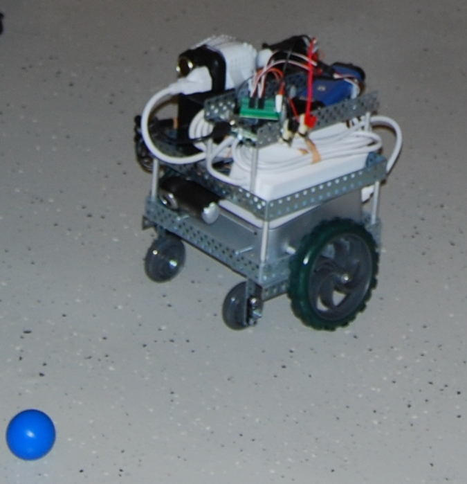
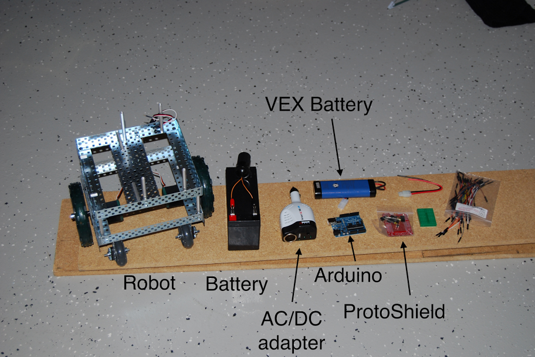

Spot
This project was my first introduction to the challenges of computer vision in the context of mobile robotics. For this project, I designed a compact, mobile robot, housing an Apple Mac Mini computer and Logitech webcam. Using this platform, I was able to explore many of the foundational perception algorithms such as histogram matching and Hough shape detection. The primary challenge I used to test the robot involved chasing a small blue ball around the floor.
Full CAD for the robot is available here, and below is a photo of some of the parts used on the robot, taken as I was building it.

